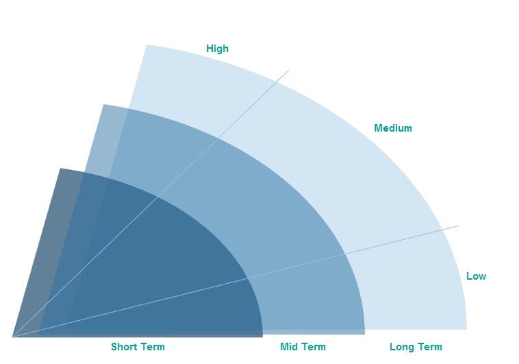

Welcome in POT tool
Digital Technologies, Practices and Use cases management

Resources
Short presentation of POT methodology (FR)
POT impact on IT strategy and architecture
User Guide (on construction) (FR)
contact
Valerie Pailhories (DF/DSI/SIT)
Carole Vial (Strategy DO)